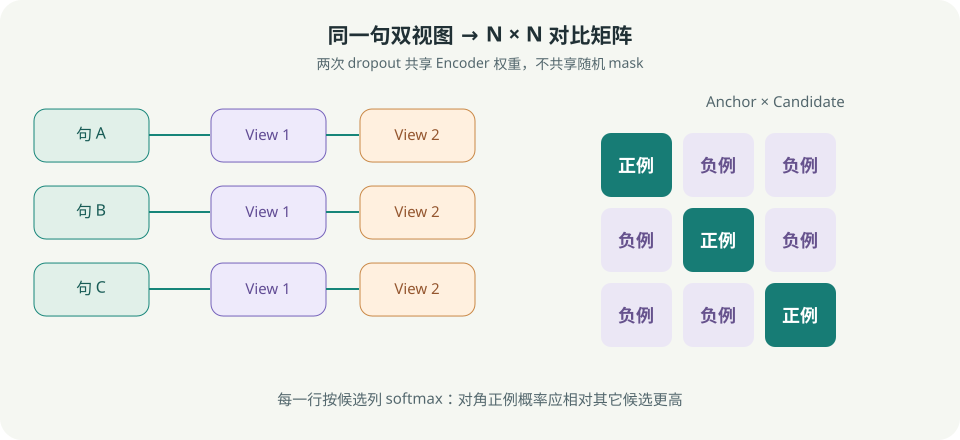

1. 为什么一句话的 BERT 隐藏状态还不等于好句向量
文本分类把句子转为向量后交给一个分类头；语义检索则希望两句意思相近就有相近的向量方向。原始 MLM 只要求在上下文中恢复词，不直接约束“今天下雨了”与“今天有降雨”的句级 cosine 相似度。直接取未经专门训练的 BERT [CLS] 或 mean pooling，得到的是一种固定的表征读取规则，不自动等于语义相似度模型。
SimCSE（Gao et al., EMNLP 2021）解决的是怎样构造可靠的句级训练信号：无标注场景里同一句话前向两次产生一个正样本对；有标注场景里利用自然语言推断（NLI）的蕴含句对作正例、矛盾句作强负例。核心不是“多加 dropout 就能得到语义”，而是 dropout 形成不同视图、再由对比损失拉近正例并相对于负例区分。
2. 无监督 SimCSE：同一句话的两次前向
输入 batch 有 N 句，每句经过同一个 Encoder 两次，或者将 batch 复制再运行，训练模式下使用各自独立的 dropout mask。得到两组向量 hᵢ 与 hᵢ⁺：它们对应同一原文，是正例。其余不同句子的向量在当前 batch 内作为负例。模型、词表、编码过程保持一致；不是把句子随机删词后假定语义不变。
当 dropout 关闭且输入完全相同时，两次前向在确定性推理条件下通常得到同样的输出，此时正例视图差异消失；原论文专门说明移除 dropout 对无监督训练会有显著不利影响。这个事实不能推广成“所有在线检索推理必须保留 dropout”：推理阶段通常关闭 dropout，以便同一个句子得到稳定可复用的 embedding。
Batch 内负例有风险：两句不同文本可能实际上语义相同，形成 false negatives。训练语料去重与同义句/近重复治理可以降低但不能完全消除这种风险，不能把随机配对总当成真负例。
3. N×N 相似度矩阵里的对角线是什么
将每个句向量 L2 归一化，形状为 H₁,H₂∈R[N,d]，两组向量矩阵乘法得出 S=H₁H₂ᵀ∈R[N,N]。第 i 行表示第 i 个 anchor 与第二组所有候选的 cosine；对角项 Sᵢᵢ 是同一句的另一 dropout 视图，正例目标。其它 Sᵢⱼ（j≠i）通常作为 in-batch negatives。

4. 把“正例更相似”写成正确的 InfoNCE
对第 i 个 anchor，zᵢ 是 Encoder+pooling 的句向量，zᵢ⁺ 是同一句另一视图；候选集为 zⱼ⁺。相似度 sim 通常是 cosine，τ>0 是温度。我们最大化正确配对的 softmax 概率，最小化负对数似然：
分母的求和轴是候选句 j，不是 embedding 的 feature 轴，也不是训练样本的标签类别数。N=1 时，没有其它负例，这个形式的 loss 没有分辨多个不同句子的作用。较小 τ 让 logits 的差异放大，容易产生更尖锐的分布；选择温度要与 batch、数据和数值稳定性一起验证。
实际代码可以使用交叉熵实现 cross_entropy(sim_matrix / tau, labels=arange(N))。训练时必须检查 diagonal 正例对齐、是否有对角 self-comparison、是否为双向/对称 loss，以及负例矩阵是否包含其它无意重复文本；本文公式描述一个方向的 InfoNCE 示意。
5. 监督 SimCSE：蕴含作正例，矛盾作强负例
在 supervised SimCSE 中，一个 NLI 训练三元组包含 anchor premise、entailment hypothesis（正例）与 contradiction hypothesis（hard negative）。它们不是“同一句两次 dropout”在语义层面的等价替代：正例可以是不同的表面语句，矛盾句在词汇上甚至非常相似，却表达不兼容的事实。
若仅用无监督 in-batch negative，模型可能过度关注词面相似；hard negative 提供了“词面很像但含义相反”的困难区分信号。监督版可以把 batch 内其它 entailment 句和指定 contradiction 句纳入分母；代码需要仔细排除错误的 self-pair 与无效标注，不能把所有 NLI 的 neutral 句武断地归为 contradiction。
中文示意：anchor“这家店今天营业”；entailment“该店今日开门”；contradiction“该店今天没有营业”。这是表达训练关系的人工示例，不是来自原 NLI 数据集的标注样本。
6. 句向量从哪里读：CLS、mean 与 pooler
Transformer Encoder 输出 [B,T,H]。拿首 token、对有效 token 做 mean pooling，或使用带投影的 pooler，都可以变成 [B,H]，但数值空间并不相同。SimCSE 官方代码区分 cls、cls_before_pooler、avg 等 pooling 配置，并说明训练/评估中的差异。
mean pooling 必须在attention_mask=1 的真实 token上求和并除以有效 token 数；不能把 PAD 计入分母，否则不同填充长度会改变相同句子的 embedding。若用 cosine 评估，应明确是否 L2-normalize、是否包含特殊 token、最大长度、batch size 及 fp32/fp16 推理模式。
7. STS Spearman 与检索 Recall@k 不可混为一谈
SimCSE 论文在 STS 任务中常报告 Spearman 相关系数，比较的是句对人工相似度等级与模型 cosine 排名之间的一致性。它不是分类 accuracy，也不是“检索前 k 条包含正确结果”的 Recall@k。论文摘要报告无监督与监督 BERT-base 在指定 STS 基准组合上分别约 76.3% 与 81.6% Spearman，但不能把这一数值直接宣称为中文专用测试集表现。
训练 embedding 用于 RAG/搜索时，还需要评价检索召回、难负例鲁棒性、跨领域迁移、向量分布、索引延迟和更新成本。数据应按来源或时间切分，避免同一 paraphrase group 同时出现在 train/test，导致虚高的验证分数。
除了直接质量指标，还应检查 embedding 维度、单位范数与 ANN 库的度量选择：若索引用内积而训练使用 cosine，通常需要显式归一化，才能在单位范数下得到一致的排序。
8. 交互：温度和正负例究竟在优化哪一项
固定一行教学相似度，下面切换的是对比目标结构而非训练后的真实 cosine。输出说明每种设置中正例与负例的定义。
三种训练对照
无监督：句 A 的 dropout 视图 A₁ → Anchor；同一句另一视图 A₂ → Positive。 不同句 B₂、C₂ → 当前 batch 内 Negative。 Loss 对 A₂ 和 B₂/C₂ 的 softmax 候选分母进行区分。
9. 什么时候 SimCSE 并不够用
无监督 SimCSE 依赖 batch 内负例，batch 太小或语料几乎同义会削弱监督对比度；跨语言和领域迁移不保证自动保持语义空间结构。监督 SimCSE 的 NLI 正负关系有语言/数据集偏差，也可能与产品中的相关性标准不同。
不要把“训练时 dropout 两次”误写成“查询时把一句话随机前向十次取最好一次”，也不要混淆句向量训练与 BERT 的 MLM 预训练。使用公开 checkpoint 时，应读取官方 pooling 建议和 tokenizer 版本并实际做任务内验证，才谈得上选择 CLS 还是 mean。
关键结论
- 无监督 SimCSE 用同一句的两次独立 dropout 视图组成正例，batch 里其它句子作为负例；推理通常关闭 dropout。
- 监督 SimCSE 用 NLI entailment 作正例、contradiction 作强负例，并通过 InfoNCE 区分候选。
- STS Spearman、检索 Recall@k、分类准确率评估目标不同；pooling 与归一化必须跟 checkpoint/任务一起验证。